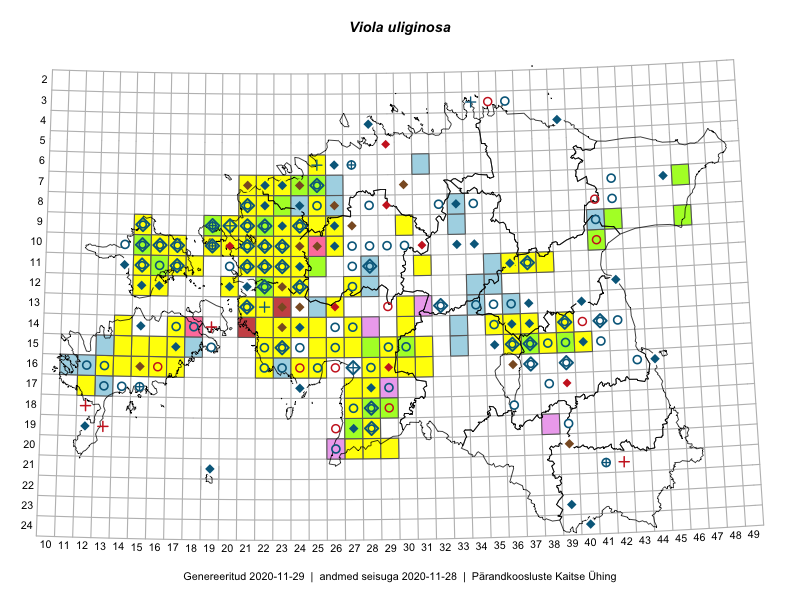

Viola uliginosa
Uuendatud: 2016-12-07
Kaardile koondatud taksonid: Viola uliginosa Besser

Kaart põhineb 199 kirjel, neist vaatlusi 195 ja eksemplare 4. Taksonit on leitud 76 ruudust.
| Ruut | Vaatleja(d) | Vaatlusaeg | Kirje tüüp | Viide andmebaasikirjele |
|---|---|---|---|---|
| 18-27 | Peedu Saar, Liina Oja | 2015-05-20 | ruut/ala | vaata PlutoFis |
| 18-27 | Peedu Saar, Liina Oja | 2015-05-22 | punkt | vaata PlutoFis |
| 18-28 | Peedu Saar, Liina Oja | 2015-05-20 | ruut/ala | vaata PlutoFis |
| 10-15 | Peedu Saar, Toomas Kukk | 2015-05-28 | ruut/ala | vaata PlutoFis |
| 10-15 | Peedu Saar, Toomas Kukk | 2015-05-28 | punkt | vaata PlutoFis |
| 10-41 | Toomas Kukk, Raivo Kalle | 2015-05-14 | ruut/ala | vaata PlutoFis |
| 10-41 | Toomas Kukk, Raivo Kalle | 2015-05-14 | punkt | vaata PlutoFis |
| 17-28 | Peedu Saar, Liina Oja | 2015-06-09 | punkt | vaata PlutoFis |
| 17-28 | Peedu Saar, Liina Oja | 2015-06-09 | punkt | vaata PlutoFis |
| 15-29 | Peedu Saar, Liina Oja | 2015-06-11 | punkt | vaata PlutoFis |
| 15-23 | Ott Luuk, Jaak-Albert Metsoja | 2015-05-27 | ruut/ala | vaata PlutoFis |
| 13-26 | Ott Luuk | 2015-06-28 | ruut/ala | vaata PlutoFis |
| 13-26 | Ott Luuk | 2015-06-28 | punkt | vaata PlutoFis |
| 17-28 | Peedu Saar, Liina Oja | 2015-06-09 | ruut/ala | vaata PlutoFis |
| 15-29 | Peedu Saar, Liina Oja | 2015-06-11 | ruut/ala | vaata PlutoFis |
| 15-30 | Tiit Hallikma, Toomas Kukk | 2015-06-10 | ruut/ala | vaata PlutoFis |
| 15-30 | Tiit Hallikma, Toomas Kukk | 2015-06-10 | punkt | vaata PlutoFis |
| 15-31 | Toomas Kukk, Tiit Hallikma | 2015-06-10 | ruut/ala | vaata PlutoFis |
| 15-31 | Tiit Hallikma, Toomas Kukk | 2015-06-10 | punkt | vaata PlutoFis |
| 12-24 | Tiit Hallikma, Toomas Kukk | 2015-08-24 | ruut/ala | vaata PlutoFis |
| 12-24 | Tiit Hallikma, Toomas Kukk | 2015-08-24 | punkt | vaata PlutoFis |
| 14-17 | Meeli Mesipuu, Kadri Tali | 2015-07-08 | ruut/ala | vaata PlutoFis |
| 14-17 | Meeli Mesipuu, Kadri Tali | 2015-07-08 | punkt | vaata PlutoFis |
| 14-17 | Meeli Mesipuu | 2015-07-08 | punkt | vaata PlutoFis |
| 19-27 | Meeli Mesipuu, Indrek Tammekänd | 2015-07-14 | punkt | vaata PlutoFis |
| 10-22 | Toomas Kukk, Thea Kull | 2014-08-21 | ruut/ala | vaata PlutoFis |
| 11-22 | Toomas Kukk, Thea Kull | 2014-08-21 | ruut/ala | vaata PlutoFis |
| 10-22 | Toomas Kukk, Thea Kull | 2014-08-21 | punkt | vaata PlutoFis |
| 10-22 | Toomas Kukk, Thea Kull | 2014-08-21 | punkt | vaata PlutoFis |
| 10-22 | Toomas Kukk, Thea Kull | 2014-08-21 | punkt | vaata PlutoFis |
| 11-22 | Toomas Kukk, Thea Kull | 2014-08-21 | punkt | vaata PlutoFis |
| 10-22 | Toomas Kukk, Thea Kull | 2014-08-21 | punkt | vaata PlutoFis |
| 10-23 | Toomas Kukk, Thea Kull | 2014-08-22 | punkt | vaata PlutoFis |
| 10-23 | Toomas Kukk, Thea Kull | 2014-08-22 | ruut/ala | vaata PlutoFis |
| 15-23 | Indrek Tammekänd | 2015-07-15 | punkt | vaata PlutoFis |
| 14-22 | Indrek Tammekänd | 2015-05-31 | punkt | vaata PlutoFis |
| 14-24 | Indrek Tammekänd | 2015-06-04 | punkt | vaata PlutoFis |
| 14-23 | Indrek Tammekänd | 2015-05-07 | punkt | vaata PlutoFis |
| 14-37 | Eeva-Maria Jeletsky, Tarmo Niitla | 2015-05-17 | ruut/ala | vaata PlutoFis |
| 14-37 | Eeva-Maria Jeletsky, Tarmo Niitla | 2015-05-17 | punkt | vaata PlutoFis |
| 14-37 | Eeva-Maria Jeletsky, Tarmo Niitla | 2015-05-17 | punkt | vaata PlutoFis |
| 14-37 | Eeva-Maria Jeletsky, Tarmo Niitla | 2015-05-17 | punkt | vaata PlutoFis |
| 14-37 | Eeva-Maria Jeletsky, Tarmo Niitla | 2015-05-17 | punkt | vaata PlutoFis |
| 14-37 | Eeva-Maria Jeletsky, Tarmo Niitla | 2015-05-17 | punkt | vaata PlutoFis |
| 15-22 | Vilma Kuusk, Indrek Tammekänd | 2015-06-30 | ruut/ala | vaata PlutoFis |
| 15-22 | Vilma Kuusk, Indrek Tammekänd | 2015-06-30 | punkt | vaata PlutoFis |
| 11-18 | Eeva-Maria Jeletsky, Tarmo Niitla | 2015-06-17 | punkt | vaata PlutoFis |
| 12-16 | Eeva-Maria Jeletsky, Tarmo Niitla | 2015-06-21 | punkt | vaata PlutoFis |
| 12-22 | Ott Luuk, Peedu Saar | 2015-08-24 | ruut/ala | vaata PlutoFis |
| 12-22 | Ott Luuk, Peedu Saar | 2015-08-24 | punkt | vaata PlutoFis |
| 11-18 | Eeva-Maria Jeletsky, Tarmo Niitla | 2015-06-17 | ruut/ala | vaata PlutoFis |
| 12-16 | Eeva-Maria Jeletsky, Tarmo Niitla | 2015-06-21 | ruut/ala | vaata PlutoFis |
| 16-13 | Mari Reitalu | 2015-08-29 | punkt | vaata PlutoFis |
| 16-13 | Mari Reitalu | 2015-08-29 | punkt | vaata PlutoFis |
| 16-25 | Maret Gerz, Leena Gerz | 2015-08-09 | ruut/ala | vaata PlutoFis |
| 16-25 | Maret Gerz, Leena Gerz | 2015-08-09 | punkt | vaata PlutoFis |
| 16-25 | Maret Gerz, Leena Gerz | 2015-08-09 | punkt | vaata PlutoFis |
| 16-25 | Maret Gerz, Leena Gerz | 2015-08-09 | punkt | vaata PlutoFis |
| 15-25 | Maret Gerz, Leena Gerz | 2015-08-08 | ruut/ala | vaata PlutoFis |
| 15-25 | Maret Gerz, Leena Gerz | 2015-08-08 | punkt | vaata PlutoFis |
| 15-25 | Maret Gerz, Leena Gerz | 2015-08-08 | punkt | vaata PlutoFis |
| 15-25 | Maret Gerz, Leena Gerz | 2015-08-08 | punkt | vaata PlutoFis |
| 19-27 | Thea Kull | 2014-08-28 | ruut/ala | vaata PlutoFis |
| 19-27 | Thea Kull | 2014-08-28 | punkt | vaata PlutoFis |
| 09-42 | Timo Luhamäe, Liina Oja | 2015-05-14 | punkt | vaata PlutoFis |
| 09-42 | Timo Luhamäe, Liina Oja | 2015-05-14 | ruut/ala | vaata PlutoFis |
| 13-30 | Meeli Mesipuu, Timo Luhamäe | 2015-06-10 | ruut/ala | vaata PlutoFis |
| 12-16 | Eeva-Maria Jeletsky, Tarmo Niitla | 2015-06-21 | punkt | vaata PlutoFis |
| 12-22 | Thea Kull, Eerik Leibak | 2015-08-27 | ruut/ala | vaata PlutoFis |
| 07-46 | Timo Luhamäe, Eerik Leibak | 2015-05-31 | ruut/ala | vaata PlutoFis |
| 17-27 | Meeli Mesipuu | 2015-05-21 | ruut/ala | vaata PlutoFis |
| 19-27 | Meeli Mesipuu | 2015-05-20 | ruut/ala | vaata PlutoFis |
| 19-27 | Meeli Mesipuu | 2015-05-20 | punkt | vaata PlutoFis |
| 17-27 | Meeli Mesipuu | 2015-05-21 | punkt | vaata PlutoFis |
| 07-46 | Timo Luhamäe, Eerik Leibak | 2015-05-31 | punkt | vaata PlutoFis |
| 13-30 | Meeli Mesipuu, Timo Luhamäe | 2015-06-10 | punkt | vaata PlutoFis |
| 14-35 | Aat Sarv | 2015-05-22 | ruut/ala | vaata PlutoFis |
| 09-25 | Thea Kull, Meeli Mesipuu, Eerik Leibak | 2014-06-11 | ruut/ala | vaata PlutoFis |
| 09-25 | Thea Kull, Meeli Mesipuu, Eerik Leibak | 2014-06-11 | punkt | vaata PlutoFis |
| 09-22 | Ott Luuk, Peedu Saar, Maret Gerz | 2014-08-21 | ruut/ala | vaata PlutoFis |
| 11-21 | Hanna-Eliisa Luts, Tõnu Ploompuu | 2015-08-13 | ruut/ala | vaata PlutoFis |
| 11-25 | Hanna-Eliisa Luts, Tõnu Ploompuu | 2015-07-28 | ruut/ala | vaata PlutoFis |
| 15-31 | Toomas Kukk, Eerik Leibak | 2016-04-28 | ruut/ala | vaata PlutoFis |
| 15-31 | Toomas Kukk, Eerik Leibak | 2016-04-28 | punkt | vaata PlutoFis |
| 11-22 | Tõnu Ploompuu | 2015-08-21 | ruut/ala | vaata PlutoFis |
| 12-20 | Meeli Mesipuu, Maret Gerz | 2015-08-25 | punkt | vaata PlutoFis |
| 12-20 | Meeli Mesipuu, Maret Gerz | 2015-08-25 | punkt | vaata PlutoFis |
| 09-15 | Toomas Kukk, Peedu Saar | 2016-05-07 | ruut/ala | vaata PlutoFis |
| 10-17 | Toomas Kukk, Peedu Saar | 2016-05-08 | ruut/ala | vaata PlutoFis |
| 09-15 | Peedu Saar, Toomas Kukk | 2016-05-07 | punkt | vaata PlutoFis |
| 10-17 | Peedu Saar, Toomas Kukk | 2016-05-08 | punkt | vaata PlutoFis |
| 10-19 | Peedu Saar, Toomas Kukk | 2016-05-12 | punkt | vaata PlutoFis |
| 09-19 | Peedu Saar, Toomas Kukk | 2016-05-13 | punkt | vaata PlutoFis |
| 10-19 | Toomas Kukk, Peedu Saar | 2016-05-12 | ruut/ala | vaata PlutoFis |
| 10-20 | Toomas Kukk, Peedu Saar | 2016-05-12 | ruut/ala | vaata PlutoFis |
| 10-22 | Tõnu Ploompuu | 2015-08-21 | ruut/ala | vaata PlutoFis |
| 10-20 | Toomas Kukk, Peedu Saar | 2016-05-12 | punkt | vaata PlutoFis |
| 10-19 | Toomas Kukk, Peedu Saar | 2016-05-12 | punkt | vaata PlutoFis |
| 09-19 | Toomas Kukk, Peedu Saar | 2016-05-13 | punkt | vaata PlutoFis |
| 11-25 | Ott Luuk, Tiit Hallikma | 2016-05-12 | ruut/ala | vaata PlutoFis |
| 12-22 | Ott Luuk, Tiit Hallikma | 2016-05-14 | ruut/ala | vaata PlutoFis |
| 09-25 | Meelis Muuga, Tõnu Ploompuu | 2015-08-17 | ruut/ala | vaata PlutoFis |
| 08-25 | Meelis Muuga, Tõnu Ploompuu | 2015-08-17 | ruut/ala | vaata PlutoFis |
| 09-21 | Kadi-Liis Kesler, Tõnu Ploompuu | 2015-07-14 | ruut/ala | vaata PlutoFis |
| 12-22 | Tiit Hallikma, Ott Luuk | 2016-05-14 | punkt | vaata PlutoFis |
| 20-27 | Peedu Saar, Thea Kull | 2016-06-06 | punkt | vaata PlutoFis |
| 20-27 | Thea Kull, Peedu Saar | 2016-06-06 | ruut/ala | vaata PlutoFis |
| 09-23 | Hanna-Eliisa Luts, Tõnu Ploompuu | 2015-07-16 | ruut/ala | vaata PlutoFis |
| 10-21 | Tõnu Ploompuu | 2015-05-02 | ruut/ala | vaata PlutoFis |
| 16-28 | Indrek Tammekänd | 2016-06-03 | ruut/ala | vaata PlutoFis |
| 16-30 | Indrek Tammekänd | 2016-06-08 | punkt | vaata PlutoFis |
| 16-30 | Indrek Tammekänd | 2016-06-08 | punkt | vaata PlutoFis |
| 13-26 | Thea Kull | 2016-06-22 | ruut/ala | vaata PlutoFis |
| 13-26 | Thea Kull | 2016-06-22 | punkt | vaata PlutoFis |
| 19-28 | Peedu Saar, Ott Luuk | 2016-06-09 | punkt | vaata PlutoFis |
| 20-28 | Peedu Saar, Ott Luuk | 2016-06-09 | ruut/ala | vaata PlutoFis |
| 19-28 | Indrek Tammekänd | 2016-07-02 | punkt | vaata PlutoFis |
| 09-26 | Thea Kull, Oliver Parrest | 2016-07-06 | ruut/ala | vaata PlutoFis |
| 14-25 | Toomas Kukk, Oliver Parrest | 2016-07-08 | ruut/ala | vaata PlutoFis |
| 18-29 | Indrek Tammekänd, Tuuli Teppo | 2016-06-06 | punkt | vaata PlutoFis |
| 15-23 | Indrek Tammekänd, Jana Galadi, Kadri Hänni | 2016-06-14 | punkt | vaata PlutoFis |
| 08-22 | Mari Reitalu, Eerik Leibak | 2016-07-07 | ruut/ala | vaata PlutoFis |
| 08-22 | Mari Reitalu, Eerik Leibak | 2016-07-07 | punkt | vaata PlutoFis |
| 07-22 | Mari Reitalu, Eerik Leibak | 2016-07-07 | punkt | vaata PlutoFis |
| 11-24 | Aat Sarv | 2016-07-09 | ruut/ala | vaata PlutoFis |
| 07-23 | Aat Sarv, Helle Mäemets, Mari Reitalu, Sirje Azarov | 2016-07-08 | ruut/ala | vaata PlutoFis |
| 09-26 | Thea Kull, Oliver Parrest | 2016-07-06 | punkt | vaata PlutoFis |
| 13-26 | Thea Kull | 2016-06-22 | punkt | vaata PlutoFis |
| 11-15 | Thea Kull, Peedu Saar | 2016-08-09 | ruut/ala | vaata PlutoFis |
| 12-16 | Thea Kull, Sander Laherand | 2016-08-11 | punkt | vaata PlutoFis |
| 11-16 | Thea Kull, Toomas Kukk | 2016-08-08 | punkt | vaata PlutoFis |
| 12-16 | Sander Laherand, Thea Kull, Nele Jõessar | 2016-08-11 | ruut/ala | vaata PlutoFis |
| 11-21 | Maret Gerz, Aat Sarv | 2016-07-07 | punkt | vaata PlutoFis |
| 11-21 | Maret Gerz, Aat Sarv | 2016-07-07 | punkt | vaata PlutoFis |
| 11-23 | Maret Gerz, Aat Sarv | 2016-07-06 | punkt | vaata PlutoFis |
| 13-21 | Maret Gerz, Aat Sarv | 2016-07-05 | punkt | vaata PlutoFis |
| 15-26 | Maret Gerz, Aat Sarv | 2016-07-04 | punkt | vaata PlutoFis |
| 10-23 | Maret Gerz, Aat Sarv | 2016-07-06 | punkt | vaata PlutoFis |
| 10-23 | Maret Gerz, Aat Sarv | 2016-07-06 | punkt | vaata PlutoFis |
| 15-16 | Maret Gerz, Meeli Mesipuu | 2016-08-13 | punkt | vaata PlutoFis |
| 10-16 | Maret Gerz, Meeli Mesipuu | 2016-08-09 | punkt | vaata PlutoFis |
| 10-16 | Maret Gerz, Meeli Mesipuu | 2016-08-09 | punkt | vaata PlutoFis |
| 11-21 | Aat Sarv, Maret Gerz | 2016-07-07 | ruut/ala | vaata PlutoFis |
| 13-22 | Aat Sarv, Maret Gerz | 2016-07-05 | ruut/ala | vaata PlutoFis |
| 11-23 | Aat Sarv, Maret Gerz | 2016-07-06 | ruut/ala | vaata PlutoFis |
| 10-23 | Aat Sarv, Maret Gerz | 2016-07-06 | ruut/ala | vaata PlutoFis |
| 15-26 | Aat Sarv, Maret Gerz | 2016-07-04 | ruut/ala | vaata PlutoFis |
| 13-21 | Aat Sarv, Maret Gerz | 2016-07-05 | ruut/ala | vaata PlutoFis |
| 07-23 | Aat Sarv, Helle Mäemets, Mari Reitalu, Sirje Azarov | 2016-07-08 | punkt | vaata PlutoFis |
| 11-15 | Peedu Saar, Thea Kull | 2016-08-09 | punkt | vaata PlutoFis |
| 15-16 | Meeli Mesipuu, Maret Gerz | 2016-08-13 | ruut/ala | vaata PlutoFis |
| 11-16 | Toomas Kukk, Thea Kull | 2016-08-08 | ruut/ala | vaata PlutoFis |
| 12-15 | Toomas Kukk, Meeli Mesipuu | 2016-08-10 | ruut/ala | vaata PlutoFis |
| 12-24 | Sirje Azarov, Meeli Mesipuu | 2016-07-05 | ruut/ala | vaata PlutoFis |
| 16-24 | Indrek Tammekänd, Indrek Sell, Jana Galadi | 2016-09-05 | punkt | vaata PlutoFis |
| 16-22 | Timo Luhamäe, Peedu Saar | 2016-07-04 | punkt | vaata PlutoFis |
| 16-28 | Indrek Tammekänd | 2016-08-27 | punkt | vaata PlutoFis |
| 16-28 | Liina Oja, Ott Luuk | 2016-07-20 | punkt | vaata PlutoFis |
| 16-28 | Liina Oja, Ott Luuk | 2016-07-20 | punkt | vaata PlutoFis |
| 10-26 | Sirje Azarov, Meeli Mesipuu | 2016-07-06 | punkt | vaata PlutoFis |
| 11-22 | Sirje Azarov, Oliver Parrest | 2016-07-07 | ruut/ala | vaata PlutoFis |
| 11-22 | Sirje Azarov, Oliver Parrest | 2016-07-07 | punkt | vaata PlutoFis |
| 11-22 | Sirje Azarov, Oliver Parrest | 2016-07-07 | punkt | vaata PlutoFis |
| 14-25 | Toomas Kukk, Oliver Parrest | 2016-07-08 | punkt | vaata PlutoFis |
| 10-20 | Timo Luhamäe, Peedu Saar | 2016-07-07 | punkt | vaata PlutoFis |
| 10-20 | Timo Luhamäe, Peedu Saar | 2016-07-07 | punkt | vaata PlutoFis |
| 09-20 | Timo Luhamäe, Peedu Saar | 2016-07-07 | punkt | vaata PlutoFis |
| 10-19 | Rein Kalamees, Liina Oja | 2016-07-07 | ruut/ala | vaata PlutoFis |
| 07-22 | Mari Reitalu, Eerik Leibak | 2016-07-07 | ruut/ala | vaata PlutoFis |
| 08-21 | Tiit Hallikma, Tõnu Ploompuu | 2016-07-07 | ruut/ala | vaata PlutoFis |
| 09-19 | Ott Luuk, Meeli Mesipuu | 2016-09-16 | punkt | vaata PlutoFis |
| 10-19 | Ott Luuk, Meeli Mesipuu | 2016-09-15 | ruut/ala | vaata PlutoFis |
| 09-30 | Ott Luuk, Peedu Saar | 2016-09-06 | punkt | vaata PlutoFis |
| 09-30 | Ott Luuk, Peedu Saar | 2016-09-06 | ruut/ala | vaata PlutoFis |
| 16-22 | Peedu Saar, Timo Luhamäe, Johannes Kõdar | 2016-07-04 | ruut/ala | vaata PlutoFis |
| 10-20 | Peedu Saar, Timo Luhamäe | 2016-07-07 | ruut/ala | vaata PlutoFis |
| 09-20 | Peedu Saar, Timo Luhamäe | 2016-07-07 | ruut/ala | vaata PlutoFis |
| 09-20 | Peedu Saar, Timo Luhamäe | 2016-07-07 | punkt | vaata PlutoFis |
| 12-27 | Ranno Puumets | 2016-05-14 | punkt | vaata PlutoFis |
| 10-19 | Rein Kalamees, Liina Oja | 2016-07-07 | punkt | vaata PlutoFis |
| 16-28 | Ott Luuk, Liina Oja | 2016-07-20 | ruut/ala | vaata PlutoFis |
| 10-19 | Meeli Mesipuu, Ott Luuk | 2016-09-15 | punkt | vaata PlutoFis |
| 10-19 | Meeli Mesipuu, Ott Luuk | 2016-09-15 | punkt | vaata PlutoFis |
| 09-19 | Meeli Mesipuu, Ott Luuk | 2016-09-16 | ruut/ala | vaata PlutoFis |
| 12-24 | Meeli Mesipuu, Sirje Azarov | 2016-07-05 | punkt | vaata PlutoFis |
| 10-26 | Meeli Mesipuu, Sirje Azarov | 2016-07-06 | ruut/ala | vaata PlutoFis |
| 10-16 | Meeli Mesipuu, Maret Gerz | 2016-08-09 | ruut/ala | vaata PlutoFis |
| 19-28 | Ott Luuk, Peedu Saar | 2016-06-09 | ruut/ala | vaata PlutoFis |
| 14-37 | Meeli Mesipuu, Peedu Saar | 2014-08-14 | ruut/ala | vaata PlutoFis |
| 12-23 | Meeli Mesipuu, Maret Gerz | 2015-08-24 | ruut/ala | vaata PlutoFis |
| 12-20 | Meeli Mesipuu, Maret Gerz | 2015-08-25 | ruut/ala | vaata PlutoFis |
| 12-23 | Meeli Mesipuu, Maret Gerz | 2015-08-24 | punkt | vaata PlutoFis |
| 12-23 | Meeli Mesipuu, Maret Gerz | 2015-08-24 | punkt | vaata PlutoFis |
| 20-28 | Ott Luuk, Peedu Saar | 2016-06-09 | punkt | vaata PlutoFis |
| 19-27 | Ott Luuk, Meeli Mesipuu | 2016-08-15 | ruut/ala | vaata PlutoFis |
| 18-28 | Peedu Saar, Liina Oja | 2015-05-20 | eksemplar | vaata PlutoFis |
| 08-23 | Ott Luuk | 2012-06-01 | eksemplar | vaata PlutoFis |
| 08-23 | Thea Kull, Meeli Mesipuu | 2012-06-01 | eksemplar | vaata PlutoFis |
| 11-25 | Thea Kull | 2015-07-15 | eksemplar | vaata PlutoFis |